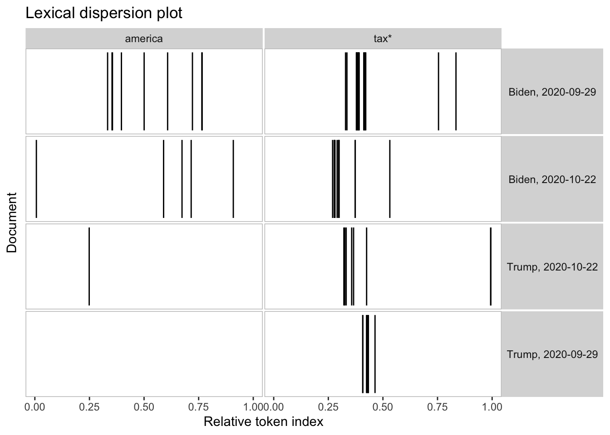
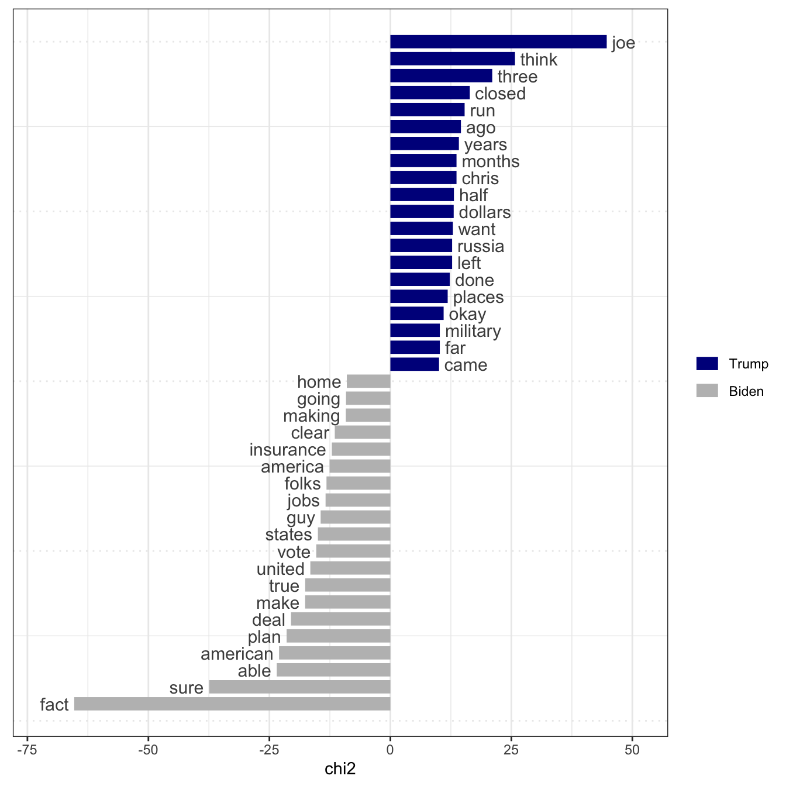

# install packages
install.packages("quanteda")
install.packages("quanteda.textstats")
install.packages("quanteda.textplots")
install.packages("rvest")
install.packages("stringr")
install.packages("devtools")
devtools::install_github("quanteda/quanteda.tidy")1 Introduction and Motivation
1.1 Objectives
To dive right in to text analysis using R, by means of an extended demonstration of how to acquire, process, quantify, and analyze a series of texts. The objective is to demonstrate the techniques covered in the book and the tools required to apply them.
This overview is intended to serve more as a demonstration of the kinds of natural language processing and text analysis that can be done powerfully and easily in R, rather than as primary instructional material. Starting in Chapter 2, you learn about the R fundamentals and work our way gradually up to basic and then more advanced text analysis. Until then, enjoy the demonstration, and don’t be discouraged if it seems too advanced to follow at this stage. By the time you have finished this book, this sort of analysis will be very familiar.
1.2 Application: Analyzing Candidate Debates from the US Presidential Election Campaign of 2020
The methods demonstrated in this chapter include:
- acquiring texts directly from the world-wide web;
- creating a corpus from the texts, with associated document-level variables;
- segmenting the texts by sections found in each document;
- cleaning up the texts further;
- tokenizing the texts into words;
- summarizing the texts in terms of who spoke and how much;
- examining keywords-in-context from the texts, and identifying keywords using statistical association measures;
- transforming and selecting features using lower-casing, stemming, and removing punctuation and numbers;
- removing selected features in the form of “stop words”;
- creating a document-feature matrix from the tokens;
- performing sentiment analysis on the texts;
- fitting topic models on the texts.
For demonstration, we will use the corpus of televised debate transcripts from the U.S. Presidential election campaign of 2020. Donald Trump and Joe Biden participated in two televised debates. The first debate took place in Cleveland, Ohio, on 29 September 2020. The two candidates met again in Nashville, Tennessee on 10 December.1
1.2.1 Acquiring text directly from the world wide web.
Full transcripts of both televized debates are available from The American Presidency Project. We start our demonstration by scraping the debates using the rvest package (Wickham 2021). You will learn more about scraping data from the internet in Chapter 7. We first need to install and load the packages required for this demonstration.
# load packages
library("quanteda")
library("rvest")
library("stringr")
library("quanteda.textstats")
library("quanteda.textplots")
library("quanteda.tidy")Next, we identify the presidential debates for the 2020 period, assign the URL of the debates to an object, and load the source page. We retrieve metadata (the location and dates of the debates), store the information as a data frame, and get the URL debates. Finally, we scrape the search results and save the texts as a character vector, with one element per debate.
# search presidential debates for the 2020 period
# https://www.presidency.ucsb.edu/advanced-search?field-keywords=&field-keywords2=&field-keywords3=&from%5Bdate%5D=01-01-2020&to%5Bdate%5D=12-31-2020&person2=200301&category2%5B%5D=64&items_per_page=50
# assign URL of debates to an object called url_debates
url_debates <- "https://www.presidency.ucsb.edu/advanced-search?field-keywords=&field-keywords2=&field-keywords3=&from%5Bdate%5D=01-01-2020&to%5Bdate%5D=12-31-2020&person2=200301&category2%5B%5D=64&items_per_page=50"
source_page <- read_html(url_debates)
# get debate meta-data
nodes_pres <- ".views-field-title a"
text_pres <- ".views-field-field-docs-start-date-time-value.text-nowrap"
debates_meta <- data.frame(
location = html_text(html_nodes(source_page, nodes_pres)),
date = html_text(html_nodes(source_page, text_pres)),
stringsAsFactors = FALSE
)
# format the date
debates_meta$date <- as.Date(trimws(debates_meta$date),
format = "%b %d, %Y")
# get debate URLs
debates_links <- source_page |>
html_nodes(".views-field-title a") |>
html_attr(name = "href")
# add first part of URL to debate links
debates_links <- paste0("https://www.presidency.ucsb.edu", debates_links)
# scrape search results
debates_scraped <- lapply(debates_links, read_html)
# get character vector, one element per debate
debates_text <- sapply(debates_scraped, function(x) {
html_nodes(x, "p") |>
html_text() |>
paste(collapse = "\n\n")
})Having retrieved the text of the two debates, we clean up the character vector. More specifically, we clean up the details on the location using regular expressions and the stringr package (see Chapter C).
debates_meta$location <- str_replace(debates_meta$location, "^.* in ", "")1.2.2 Creating a text corpus
Now we have two objects. The character vector debates_text contains the text of both debates, and the data frame debates_meta stores the date and location of both debates. These objects allow us to create a quanteda corpus, with the metadata. We use the corpus() function, specify the location of the document-level variables, and assign the corpus to an object called data_corpus_debates.
data_corpus_debates <- corpus(debates_text,
docvars = debates_meta)
# check the number of documents included in the text corpus
ndoc(data_corpus_debates)[1] 2The object data_corpus_debates contains two documents, one for each debate. While this unit of analysis may be suitable for some analyses, we want to identify all utterances by the moderator and the two candidates. With the function corpus_segment(), we can segment the corpus into statements. The unit of analysis changes from a full debate to a statement during a debate. Inspecting the page for one of the debates2 reveals that a new utterance starts with the speaker’s name in ALL CAPS, followed by a colon. We use this consistent pattern for segmenting the corpus to the level of utterances. The regular expression "\\s*[[:upper:]]+:\\s+" identifies speaker names in ALL CAPS (\\s*[[:upper:]]+), followed by a colon +: and a white space \\s+.
data_corpus_debatesseg <- corpus_segment(data_corpus_debates,
pattern = "\\s*[[:upper:]]+:\\s+",
valuetype = "regex",
case_insensitive = FALSE)
summary(data_corpus_debatesseg, n = 4)Corpus consisting of 1207 documents, showing 4 documents:
Text Types Tokens Sentences location date pattern
text1.1 139 251 13 Cleveland, Ohio 2020-09-29 \n\nWALLACE:
text1.2 6 6 1 Cleveland, Ohio 2020-09-29 \n\nBIDEN:
text1.3 5 5 1 Cleveland, Ohio 2020-09-29 \n\nTRUMP:
text1.4 3 3 1 Cleveland, Ohio 2020-09-29 \n\nBIDEN: The segmentation results in a new corpus consisting of 1,207 utterances. The summary() function provides a useful overview of each utterance. The first text, for example, contains 251 tokens, 139 types (i.e., unique tokens) and 13 sentences.
Having segmented the corpus, we improve the document-level variables since such meta information on each document is crucial for subsequent analyses like subsetting the corpus or grouping the corpus to the level of speakers. We create a new document-level variable called “speaker” based on the pattern extracted above.
# str_trim() removes empty whitespaces,
# str_remove_all() removes the colons,
# and str_to_title() changes speaker names
# from UPPER CASE to Title Case
data_corpus_debatesseg <- data_corpus_debatesseg |>
rename(speaker = pattern) |>
mutate(speaker = str_trim(speaker),
speaker = str_remove_all(speaker, ":"),
speaker = str_to_title(speaker))
# cross-table of speaker statements by debate
table(data_corpus_debatesseg$speaker,
data_corpus_debatesseg$location)
Cleveland, Ohio Nashville, Tennessee
Biden 269 84
Trump 340 122
Wallace 246 0
Welker 0 146The cross-table reports the number of statement by each speaker in each debate. The first debate in Cleveland seems to be longer: the number of Trump’s and Biden’s statements during the Cleveland debates are three times higher than those in Tennessee. The transcript reports 246 utterances by Chris Wallace during the first and 146 by Kristen Welker during the second debate. We can inspect all cleaned document-level variables in this text corpus.
data_corpus_debatesseg |>
docvars() |>
glimpse()Rows: 1,207
Columns: 3
$ location <chr> "Cleveland, Ohio", "Cleveland, Ohio", "Cleveland, Ohio", "Cle…
$ date <date> 2020-09-29, 2020-09-29, 2020-09-29, 2020-09-29, 2020-09-29, …
$ speaker <chr> "Wallace", "Biden", "Trump", "Biden", "Wallace", "Trump", "Wa…1.2.3 Tokenizing a corpus
Next, we tokenize our text corpus. Typically, tokenization involves separating texts by white spaces. We tokenize the text corpus without any pre-processing using tokens().
toks_usdebates2020 <- tokens(data_corpus_debatesseg)
# let's inspect the first six tokens of the first four documents
print(toks_usdebates2020, max_ndoc = 4, max_ntoken = 6)Tokens consisting of 1,207 documents and 3 docvars.
text1.1 :
[1] "Good" "evening" "from" "the" "Health" "Education"
[ ... and 245 more ]
text1.2 :
[1] "How" "you" "doing" "," "man" "?"
text1.3 :
[1] "How" "are" "you" "doing" "?"
text1.4 :
[1] "I'm" "well" "."
[ reached max_ndoc ... 1,203 more documents ]tokens(data_corpus_debatesseg)Tokens consisting of 1,207 documents and 3 docvars.
text1.1 :
[1] "Good" "evening" "from" "the" "Health"
[6] "Education" "Campus" "of" "Case" "Western"
[11] "Reserve" "University"
[ ... and 239 more ]
text1.2 :
[1] "How" "you" "doing" "," "man" "?"
text1.3 :
[1] "How" "are" "you" "doing" "?"
text1.4 :
[1] "I'm" "well" "."
text1.5 :
[1] "Gentlemen" "," "a" "lot" "of" "people"
[7] "been" "waiting" "for" "this" "night" ","
[ ... and 137 more ]
text1.6 :
[1] "Thank" "you" "very" "much" "," "Chris" "." "I" "will"
[10] "tell" "you" "very"
[ ... and 282 more ]
[ reached max_ndoc ... 1,201 more documents ]# check number of tokens and types
toks_usdebates2020 |>
ntoken() |>
sum()[1] 43614toks_usdebates2020 |>
ntype() |>
sum()[1] 28137Without any pre-processing, the corpus consists of 43,742 tokens and 28,174 types. We can easily check how these numbers change when transforming all tokens to lowercase and removing punctuation characters.
toks_usdebates2020_reduced <- toks_usdebates2020 |>
tokens(remove_punct = TRUE) |>
tokens_tolower()
# check number of tokens and types
toks_usdebates2020_reduced |>
ntoken() |>
sum()[1] 36801toks_usdebates2020_reduced |>
ntype() |>
sum()[1] 25049The number of tokens and types decreases to 36,740 and 28,174, respectively, after removing punctuation and harmonizing all terms to lowercase.
1.2.4 Keywords-in-context
In contrast to a document-feature matrix (covered below), tokens objects still preserve the order of words. We can use tokens objects to identify the occurrence of keywords and their immediate context.
kw_america <- kwic(toks_usdebates2020,
pattern = c("america"),
window = 2)
# number of mentions
nrow(kw_america)[1] 18# print first 6 mentions of America and the context of ±2 words
head(kw_america, n = 6)Keyword-in-context with 6 matches.
[text1.284, 66] towns in | America | , how
[text1.290, 80] states in | America | with a
[text1.290, 96] States of | America | , and
[text1.335, 5] worst president | America | has ever
[text1.489, 37] whole of | America | . But
[text1.500, 53] applied in | America | ." 1.2.5 Text processing
The keywords-in-context analysis above reveals that all terms are still in upper case and that very frequent, uninformative words (so-called stopwords) and punctuation are still part of the text. In most applications, we remove very frequent features and transform all words to lowercase. The code below shows how to adjust the object accordingly.
toks_usdebates2020_processed <- data_corpus_debatesseg |>
tokens(remove_punct = TRUE) |>
tokens_remove(pattern = stopwords("en")) |>
tokens_tolower()Let’s inspect if the changes have been implemented as we expect by calling kwic() on the new tokens object.
kw_america_processed <- kwic(toks_usdebates2020_processed,
pattern = c("america"),
window = 2)
# print first 6 mentions of America and the context of ±2 words
head(kw_america_processed, n = 6)Keyword-in-context with 6 matches.
[text1.284, 32] class towns | america | well guy
[text1.290, 29] half states | america | significant increase
[text1.290, 38] united states | america | wants open
[text1.335, 3] worst president | america | ever come
[text1.489, 15] equality whole | america | never accomplished
[text1.500, 25] equally applied | america | believe separate # test: print as table+
library(kableExtra)
kw_america_processed |> data.frame() |>
dplyr::select(Pre = pre, Keyword = keyword, Post = post, Pattern = pattern) |>
kbl(booktabs = T) %>%
kable_styling(latex_options = c("striped", "scale_down"), html_font = "Source Sans Pro", full_width = F)| Pre | Keyword | Post | Pattern |
|---|---|---|---|
| class towns | america | well guy | america |
| half states | america | significant increase | america |
| united states | america | wants open | america |
| worst president | america | ever come | america |
| equality whole | america | never accomplished | america |
| equally applied | america | believe separate | america |
| defeat racism | america | america | |
| increase homicides | america | summer particularly | america |
| less violence | america | today president | america |
| fired plant | america | one's going | america |
| fire plant | america | going move | america |
| united states | america | situation thousands | america |
| every company | america | blow away | america |
| united states | america | america | |
| united states | america | anybody seeking | america |
| section race | america | want talk | america |
| institutional racism | america | always said | america |
| growing industry | america | are--is electric--excuse | america |
The processing of the tokens object worked as expected. Let’s imagine we want to group the documents by debate and speaker, resulting in two documents for Trump, two for Biden, and one for each moderator. tokens_group() allows us to change the unit of analysis. After aggregating the documents, we can use the function textplot_xray() to observe the occurrences of specific keywords during the debates.
# new document-level variable with date and speaker
toks_usdebates2020$speaker_date <- paste(
toks_usdebates2020$speaker,
toks_usdebates2020$date,
sep = ", ")
# reshape the tokens object to speaker-date level
# and keep only Trump and Biden
toks_usdebates2020_grouped <- toks_usdebates2020 |>
tokens_subset(speaker %in% c("Trump", "Biden")) |>
tokens_group(groups = speaker_date)
# check number of documents
ndoc(toks_usdebates2020_grouped)[1] 4# use absolute position of the token in the document
textplot_xray(
kwic(toks_usdebates2020_grouped, pattern = "america"),
kwic(toks_usdebates2020_grouped, pattern = "tax*")
)
The grouped document also allows us to check how often each candidate spoke during the debate.
ntoken(toks_usdebates2020_grouped)Biden, 2020-09-29 Biden, 2020-10-22 Trump, 2020-09-29 Trump, 2020-10-22
7977 8060 8956 8981 The number of tokens between Trump and Biden do not differ substantively in both debates. Trump’s share of speech is only slightly higher than Biden’s (7996 v 8093 tokens; 8973 v 9016 tokens).
1.2.6 Identifying multiword expressions
Many languages build on multiword expressions. For instance, “income” and “tax” as separate unigrams have a different meaning than the bigram “income tax”. The package quanteda.textstats includes the function textstat_collocation() that automatically retrieves common multiword expressions.
tstat_coll <- data_corpus_debatesseg |>
tokens(remove_punct = TRUE) |>
tokens_remove(pattern = stopwords("en"), padding = TRUE) |>
textstat_collocations(size = 2:3, min_count = 5)
# for illustration purposes select the first 20 collocations
head(tstat_coll, 20) collocation count count_nested length lambda z
1 president trump 69 42 2 6.898135 21.87073
2 make sure 30 4 2 7.463828 21.53833
3 president biden 51 51 2 6.434178 20.53644
4 mr president 33 20 2 5.358261 19.55120
5 health care 20 15 2 7.578059 19.31951
6 number one 18 16 2 5.593899 17.93762
7 right now 18 13 2 4.814084 16.84894
8 number two 15 11 2 5.470417 16.68685
9 half million 15 13 2 6.850521 16.55165
10 mr vice 15 15 2 5.345112 16.54794
11 american people 22 4 2 4.971608 16.45284
12 two minutes 28 19 2 8.502087 16.08709
13 four years 19 15 2 7.592875 16.04832
14 come back 12 7 2 5.535399 15.45982
15 one number 12 12 2 5.120179 14.65388
16 climate change 11 8 2 8.961748 14.65273
17 three years 11 5 2 5.346560 14.55198
18 million people 18 18 2 4.075772 14.42822
19 vice president 99 81 2 9.074332 14.06393
20 million dollars 10 10 2 5.285594 13.99695We can use tokens_compound() to compound certain multiword expressions before creating a document-feature matrix which does not consider word order. For illustration purposes, we compound climate change ,social securit*, and health insurance*. By default, compounded tokens are concatenated by _.
toks_usdebates2020_comp <- toks_usdebates2020 |>
tokens(remove_punct = TRUE) |>
tokens_compound(pattern = phrase(c("climate change",
"social securit*",
"health insuranc*"))) |>
tokens_remove(pattern = stopwords("en"))1.2.7 Document-feature matrix
We have come a long way already. We downloaded debate transcripts, segmented the texts to utterances, added document-level variables, tokenized the corpus, inspected keywords, and compounded multiword expressions. Next, we transform our tokens object into a document-feature matrix (dfm). A dfm counts the occurrences of tokens in each document. We can create a document feature matrix, print the structure, and get the most frequent words.
dfmat_presdebates20 <- dfm(toks_usdebates2020_comp)
# most frequent features
topfeatures(dfmat_presdebates20, n = 10)president going people said know want get say
287 278 258 162 139 128 118 114
look vice
105 101 # most frequent features by speaker
topfeatures(dfmat_presdebates20, groups = speaker, n = 10)$Biden
going people fact said get make know president
126 118 72 62 54 46 46 45
sure can
44 43
$Trump
people going know said look want joe done say just
111 92 85 75 65 61 55 55 54 52
$Wallace
president sir going question mr vice trump go
110 56 44 39 38 36 33 30
two right
28 25
$Welker
president vice trump biden let right question move
99 52 37 34 28 27 26 24
talk --
21 19 Many methods build on document-feature matrices and the “bag-of-words” approach. In this section, we introduce textstat_keyness(), which identifies features that occur differentially across different categories – in our case, Trump’s and Biden’s utterances. The function textplot_keyness() provides a straightforward way of visualize the results of the keyness analysis (Figure (fig:keynesspres).)
tstat_key <- dfmat_presdebates20 |>
dfm_subset(speaker %in% c("Trump", "Biden")) |>
dfm_group(groups = speaker) |>
textstat_keyness(target = "Trump")
textplot_keyness(tstat_key)
1.2.8 Bringing it all together: Sentiment analysis
Before introducing the R Basics in the next chapter, we show how to conduct a dictionary-based sentiment analysis using the Lexicoder Sentiment Dictionary (Young and Soroka 2012). The dictionary, included in quanteda as data_dictionary_LSD2015 contains 1709 positive and 2858 negative terms (as well as their negations). We discuss advanced sentiment analyses with measures of uncertainty in Chapter ??.
toks_sent <- toks_usdebates2020 |>
tokens_group(groups = speaker) |>
tokens_lookup(dictionary = data_dictionary_LSD2015,
nested_scope = "dictionary")
# create a dfm with the count of matches,
# transform object into a data frame,
# and add document-level variables
dat_sent <- toks_sent |>
dfm() |>
convert(to = "data.frame") |>
cbind(docvars(toks_sent))
# select Trump and Biden and aggregate sentiment
dat_sent$sentiment = with(
dat_sent,
log((positive + neg_negative + 0.5) /
(negative + neg_positive + 0.5)))
dat_sent doc_id negative positive neg_positive neg_negative speaker sentiment
1 Biden 357 465 33 8 Biden 0.19272394
2 Trump 430 509 7 2 Trump 0.15627088
3 Wallace 136 185 0 4 Wallace 0.32806441
4 Welker 106 100 0 0 Welker -0.057987261.3 Issues
Some issues raised from the example, where we might have done things differently or added additional analysis.
1.4 Further Reading
Some studies of debate transcripts? Or issues involved in analyzing interactive or “dialogical” documents.
1.5 Exercises
Add some here.
The transcripts are available at https://www.presidency.ucsb.edu/documents/presidential-debate-case-western-reserve-university-cleveland-ohio and https://www.presidency.ucsb.edu/documents/presidential-debate-belmont-university-nashville-tennessee-0.↩︎
https://www.presidency.ucsb.edu/documents/presidential-debate-case-western-reserve-university-cleveland-ohio↩︎